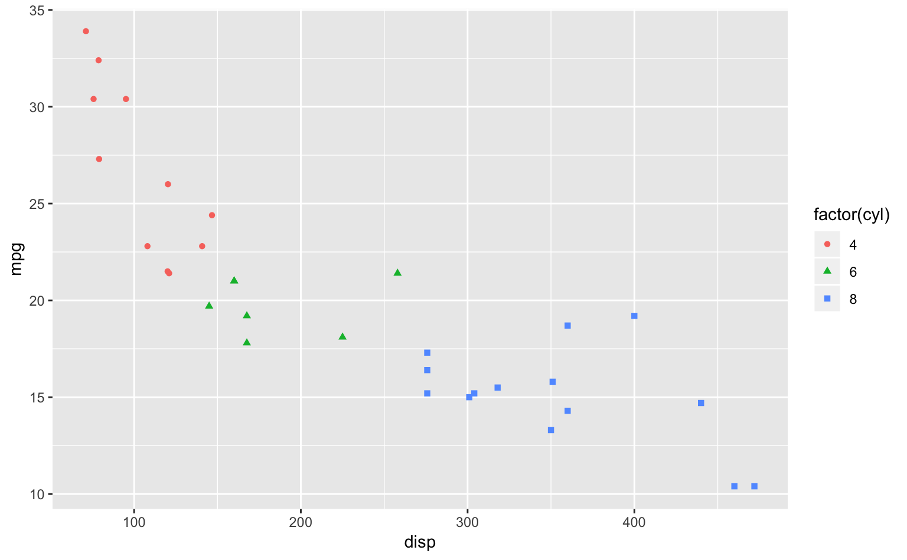
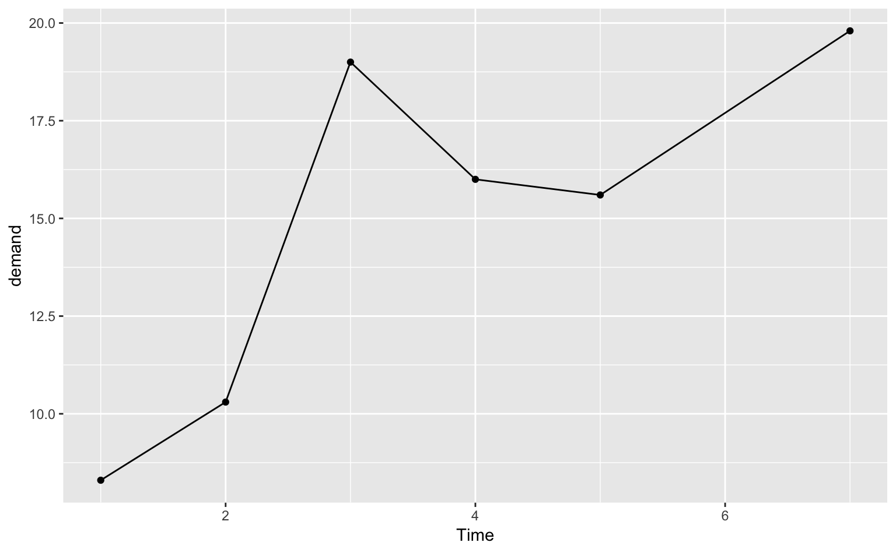
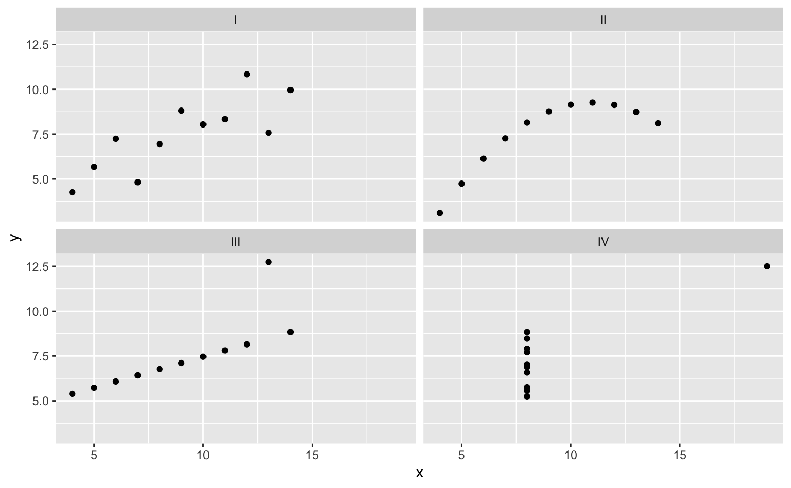
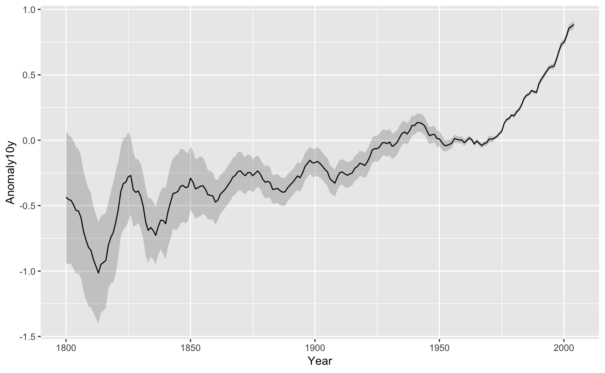
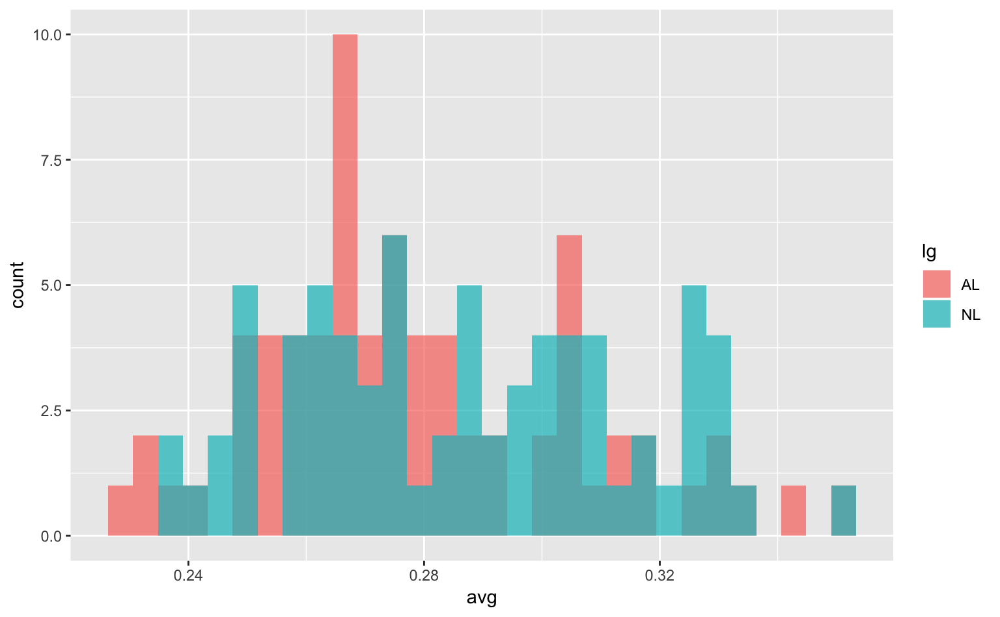

2 チュートリアル
2.1 早速手を動かす
チュートリアル用のサンプルデータとして、ggplot2自体に入っているmpgデータを使ってみることにする。まずは、ggplot2を読み込む。
library(ggplot2)
# library(tidyverse)でもOK。なぜOKなのか気になる人はググって
# ※シャープ記号より後ろに書かれている内容はただのコメントアウト（＝注釈）mpgは様々な車の燃費に関するデータである（コンソールに?mpgと入力するとヘルプをみることができる）。では、str(データ)で中身を確認してみよう。
str(mpg)## Classes 'tbl_df', 'tbl' and 'data.frame': 234 obs. of 11 variables:
## $ manufacturer: chr "audi" "audi" "audi" "audi" ...
## $ model : chr "a4" "a4" "a4" "a4" ...
## $ displ : num 1.8 1.8 2 2 2.8 2.8 3.1 1.8 1.8 2 ...
## $ year : int 1999 1999 2008 2008 1999 1999 2008 1999 1999 2008 ...
## $ cyl : int 4 4 4 4 6 6 6 4 4 4 ...
## $ trans : chr "auto(l5)" "manual(m5)" "manual(m6)" "auto(av)" ...
## $ drv : chr "f" "f" "f" "f" ...
## $ cty : int 18 21 20 21 16 18 18 18 16 20 ...
## $ hwy : int 29 29 31 30 26 26 27 26 25 28 ...
## $ fl : chr "p" "p" "p" "p" ...
## $ class : chr "compact" "compact" "compact" "compact" ...11の変数（variable）と234の観測値（observation）が記録されている。234行×11列のスプレッドシートがあるのと同じ状態だと考えてほしい。head(データ)で先頭6行のデータを確認してみよう。
head(mpg)## # A tibble: 6 x 11
## manufacturer model displ year cyl trans drv cty hwy fl class
## <chr> <chr> <dbl> <int> <int> <chr> <chr> <int> <int> <chr> <chr>
## 1 audi a4 1.8 1999 4 auto(… f 18 29 p comp…
## 2 audi a4 1.8 1999 4 manua… f 21 29 p comp…
## 3 audi a4 2 2008 4 manua… f 20 31 p comp…
## 4 audi a4 2 2008 4 auto(… f 21 30 p comp…
## 5 audi a4 2.8 1999 6 auto(… f 16 26 p comp…
## 6 audi a4 2.8 1999 6 manua… f 18 26 p comp…変数は全部で11個あるが、まずは2つの変数に注目してみよう。その変数は、
displ：エンジンの排気量（リットル）；engine displacement, in liters
hwy：燃費（マイル／ガロン）；highway miles per gallon
である。
素朴に考えて思いつくのは、「排気量と燃費の（相関）関係はどうなっているか？」というものだろう。排気量と燃費はそれぞれ連続変数（continuous variable：量的変数、quantitative variableとも言う）なので、ここは散布図を描くのが妥当そうである。
では、ggplot2における可視化を、手順を追って見ていこう。
1. X軸とY軸にどの変数をマッピングしたいかを考える
基本のコードはggplot(data = データ, aes(x = X軸の変数, y = Y軸の変数))である。
ggplot(data = mpg, aes(x = displ, y = hwy))
しかし、灰色の背景があるだけでデータはプロットされない。なぜなら、どのようなデザインでデータをプロットするかを指示していないからである。つまり、これだけではまだ足りないということである。
2. どのようなデザインでプロットしたいかを指示する
データをどのようなデザイン（geometry）でプロットしたいかを、geom_xxxx()で指定しなければならない。今回は散布図（点でプロット）なので、geom_point()という関数を使う。
先程のコードに「+」でコードをつなげていくことでプロットできるようになる。
ggplot(data = mpg, aes(x = displ, y = hwy)) + #ここまでは上のコードと同じ
geom_point() # データを点（point）としてデザインするための関数
完成。基本はこれだけである。
なお、ほとんどのグラフはX軸とY軸から構成されるので、実はコードの中に一々x = displやy = hwy"と書く必要はない。また、データについても自明なので、data = mpgと書く必要もない。つまり、上のコードは下のように書くこともできる（これ以降、data, x, yは省略する）。
ggplot(mpg, aes(displ, hwy)) +
geom_point()
3. 変数を色（や形状）にマッピングする
もちろん上の図ができた時点でOKだが、これだけではどうも味気ない。ではここで一歩進んで、もう1つ変数を加えてみよう。その変数とは、
- year：車の製造年（1999 or 2008）
である。このとき「製造年によって、排気量と燃費の関係は違うのではないか？」ということが素朴に思いつく。
それでは、yearによって点の色を変えてみよう。以下のコードを書けばOKである。
ggplot(mpg, aes(displ, hwy, color = year)) + # color = year を追加
geom_point()
aes()にcolor = yearを追加することで、yearを色に対応づけることができた。
しかし、このグラフは厳密には間違っている。どこが間違っているのだろうか？ 少し考えてみてほしい。
答え
図の右側の青いバー（凡例；legend）を見ると、その横に製造年が連続変数として2年刻みで書かれている（2000,2002,…,2008）。しかし、実際のデータには1999と2008の2つの値しかない。もちろん製造年は時間なので連続的なものだが、この場合は離散変数（discrete variable；質的変数、qualitative/categorical/factor variableとも言う）として扱ったほうがデータの表現として妥当だろう。
この場合、yearをfactor()でくくると解決する。
ggplot(mpg, aes(displ, hwy, color = factor(year))) +
geom_point()
Rでは、factor(変数)とすることで、その変数を離散変数として扱うことができるようになる。その結果、凡例の表示も妥当なものとなった。
2.2 まとめ＋ggplot2の概観
このように、ggplot2を使うと、数行のコードでそれなりに見栄えの良い図が描けるようになる。
下に載せているのはあくまでごく一部だが、ggplot2では以下のデザイン（geom_xxxx()）を使うことが多い。
| geom | デザイン |
|---|---|
| geom_bar() | 棒グラフ |
| geom_line() | 折れ線グラフ |
| geom_point() | 散布図、点 |
| geom_errorbar() | エラーバー |
| geom_pointrange() | 点＋線 |
| geom_histogram() | ヒストグラム |
| geom_density() | 密度曲線 |
| geom_boxplot() | 箱ひげ図 |
| geom_violin() | ヴァイオリンプロット |
| geom_jitter() | データポイント |
| geom_smooth() | 関数のフィッティング |
| geom_text() | テキスト |
これもまたごく一部だが、変数はx、y、colorだけでなく、以下の要素（aes()）にも対応づけることができる。
| aes() | 要素 |
|---|---|
| x | X軸 |
| y | Y軸 |
| color | 枠の色 |
| fill | 塗りつぶしの色 |
| linetype | 線の形 |
| size | 線の太さ、点の大きさ |
| shape | 点の形 |
以降の章では、よく用いる可視化の方法（グラフ）について見ていくことにする。